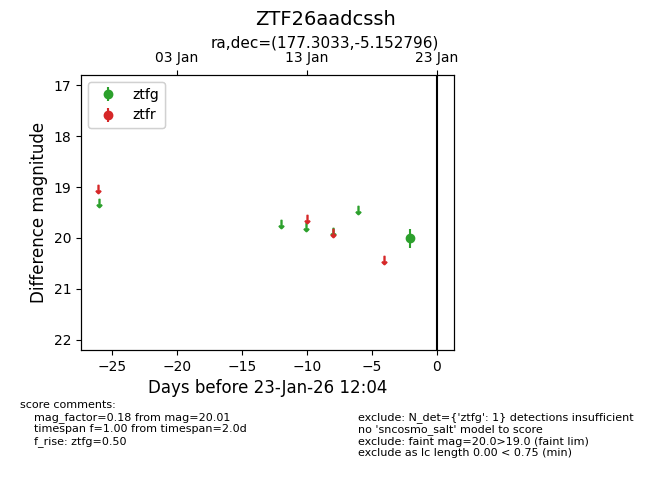
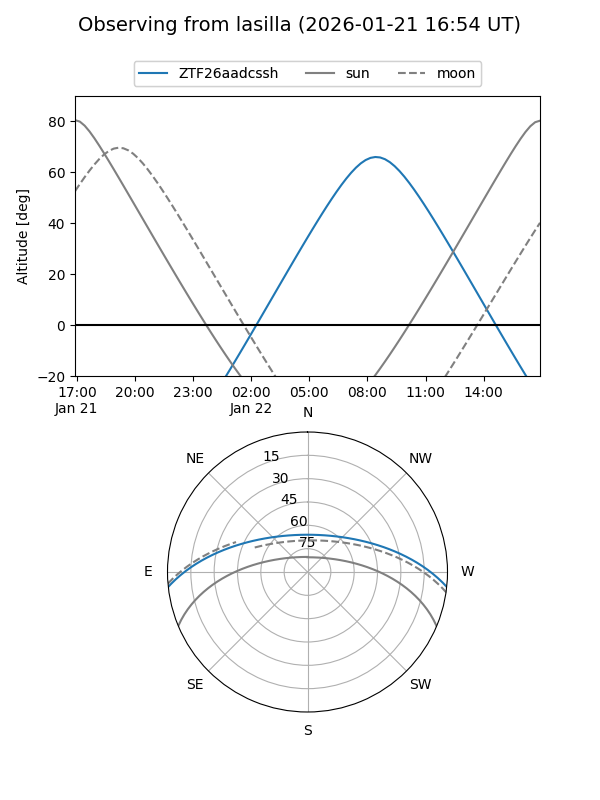

ZTF26aadcssh
Target ZTF26aadcssh at 2026-01-23 12:06
Aliases and brokers:
FINK: link
Lasair: link
ALeRCE: link
alt names
ZTF26aadcssh (ztf,fink_ztf)
Coordinates:
equatorial (ra, dec) = 177.3033,-5.15280
equatorial (HMS+DMS) = 11:49:12.80,-05:09:10.06
galactic (l, b) = (275.6293,+54.38697)
Flags:
Photometry:
last ztfg=20.01
1 ztfg detections
Lightcurve

Visibility


Additional plots